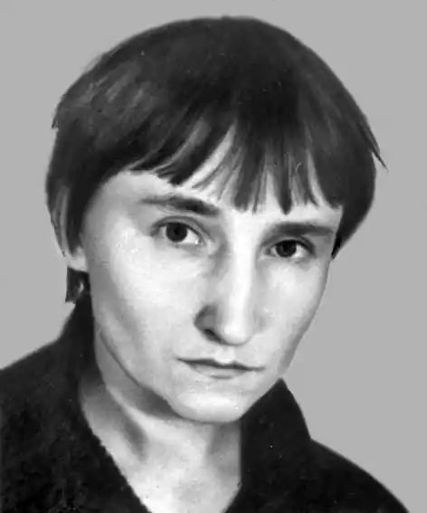
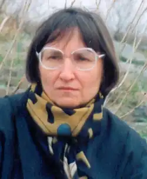
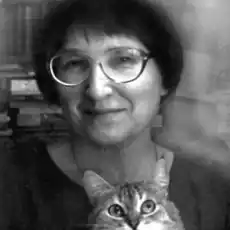

Народилася 1 січня 1950 в селі Любарці Бориспільського р-ну Київської області.
Закінчила філфак Київського державного університету імені Т.Г.Шевченка (1976). Працювала на видавничій (1969 – 1978) та журналістській (1978 – 1989) роботі.
Автор поетичних книжок "День народження грому" (1984), "Цвіт королевий" (1988), "Гостини" (1986), "Ковток тиші" (1999), "Слон мандрує до мами" (2001), збірок ліричних новел "Катруся з роду Чимчиків" (1992) та "Будинок старий, як світ"(1999), віршів та оповідань у книзі "Чарівний вузлик" (2000), народознавчої книжки для дітей "Забавлянки мами Мар"янки" (1992, у співавторстві), "Ну й гарно все придумав Бог" (2003, видання отримало Грамоту Президента Форуму видавців у Львові), книжки вибраного для дітей "Місяць у колисці" (2012); а також шкільних читанок "Ластівка", "Біла хата", "Писанка" (1992), "Зелена неділя" (1993), "Короткого біографічного довідника" авторів цих читанок (під спільним псевдонімом Оксана Верес – разом із Дмитром Чередниченком); посібника з етики для початкової школи "Андрійкова книжка" ( для 1, 2 кл. – 1992, для 3 кл. – 1993, для 4 кл. – 1996; у співавторстві), тритомної читанки-хрестоматії для дошкілля "Український садочок" (спільно з Дмитром Чередниченком), хрестоматії школяра "Про маму" (2001); антології поезії української діаспори "Листок з вирію" (спільно з Дмитром Чередниченком – 2001, 2002), хрестоматії світової літератури для початкової школи "Світ від А до Я" у трьох томах (2007). Твори перекладалися білоруською, польською, російською мовами. Друкувалася у Польщі, Білорусії, Чехії, Словаччині, Канаді, США. Перекладає з білоруської, німецької, шведської, данської та норвезької мов. У її перекладі побачили світ: Валентин Лукша "Літо цілий рік", вірші та казки (1985) (з біл.); Джеймс Крюс, "Флорентіна" (1983, 1991) (з нім.); Ян Екгольм "Людвігові Чотирнадцятому – ура!" (1989, друге видання "Людвіґові Хитрому – ура, ура, ура!", 2009) (зі шв.); Єста Кнутсон – сім повістей про Пелле Безхвостого (2005-2010) (зі шв.), Бенні Андерсен, "Пригоди Невсідомика" (2005) (з дан.); Ганс Християн Андерсен "Казки" (2006) (з дан.), Кнут Гамсун, "Містерії" (2007) (з норв.); Кристіна Фалькенланд, "Моя тінь" (2004) (зі шв.), Марія Ґріпе "Ельвіс Карлсон" та "Діти склодува" (2006) (зі шв.), Турмуд Гауґен "Цепелін" (2006) (з норв.), Клаус Гаґеруп "Маркус і Діана" та "Маркус і дівчата" (2006) (з норв.), Ева-Марія Люнд "Викрадач ангелів" (2007) (з норв.), Ґру Дале "Хтозна-що, або свято першого зуба" (2007) (з норв.), Ульф Старк "Мій друг Персі, Бофало Біл і я" (2008) (зі шв.), Ганна Гаґеруп, Клаус Гаґеруп "У страху великі очі" (2009) (з норв.), Свен Нордквіст "Петсон, Фіндус і намет", "Полювання на Лиса" (2009), "Петсон, Фіндус і торт на іменини", "Як Фіндус загубився", "Петсон, Фіндус і переполох на городі" (2010), "Різдво у Петсона" (2012) (зі шв.), Оле Лун Кіркеґор "Отто – носоріг" (2010) (з дан.), Пер Петтерсон "Верхи на крадених конях" (2010) (з норв.), Оке Гольберґ "Туре Свентон, приватний детектив" (2010) (зі шв.), Астрід Ліндґрен "Сонячна галявина", "Домовичок Нільс Карлсон", "Книжка про Лотту з Бешкетної вулиці" (2010) (зі шв.), Марія Парр "Вафельне серце" (2011), Клаус Гаґеруп "Маркус і велика футбольна любов" (2011) (з норв.) Переклала трилогію Сергія Граховського "Зона мовчання" (досі невидана, верстка), а також окремі твори Максима Танка, Володимира Короткевича, Сергія Панізніка, Казимира Камейші, Миколи Малявки, Ніни Матяш, Сергія Тарасова (білорус.); Інґер Сандберґ, Ґуннель Лінде, Ульфа Старка, Едіт Седерґран, Бу Сеттерлінда, Бенґта Шердемана, Артура Лундквіста, Юйї і Томаса Віесландерів, Ґуннара Екелефа, Вільгельма Екелунда, Еріка Блумберґа, Вернера Аспенстрема, Гаррі Мартінсона, Ельмера Діктуніуса, Інґрід Шестранд, Сів Відерберґ, Маріанне Сандельс, Яльмара Седерберґа, Астрід Ліндґрен , Пера Родстрема (швед.); Лісбет Торп (дан.); Йо Тенфюрд, Альфа Прейсена, Арнульфа Еверланна, Гюнвор Гофму; Крістіни Бусти, Фрідріха Шиллера, Інґеборґ Бахман, Вільгельма Сабо, Моріца Гартмана (нім.) та ін. Автор статей: про шведських письменників – Сару Лідман "Мистецьке кредо – правда" (у виданні "Острів. Я і мій син", "Дніпро", 1984, переклдад Ольги Сенюк); – Авґуста Стріндберґа "Поет і сумління епохи" (у виданні "Червона кімната", "Фоліо", 2009, переклад Ольги Сенюк); – про Віктора Близнеця, Миколу Вінграновського, Ольгу Сенюк (у газеті "Слово Просвіти"); – про Наталку Поклад, Людмилу Задорожну, Ольгу Мак, Лесю Храпливу (у журналі "Наше життя", США) та ін. Лауреат премії імені Івана Огієнка (1996), "Світослов" (за "чисте сяйво метафори", м. Коломия, 2005) та премії ім. Максима Рильського в галузі художнього перекладу зі скандинавських мов (2007). Нагороджена Грамотою Президента Форуму видавців у Львові (2004).